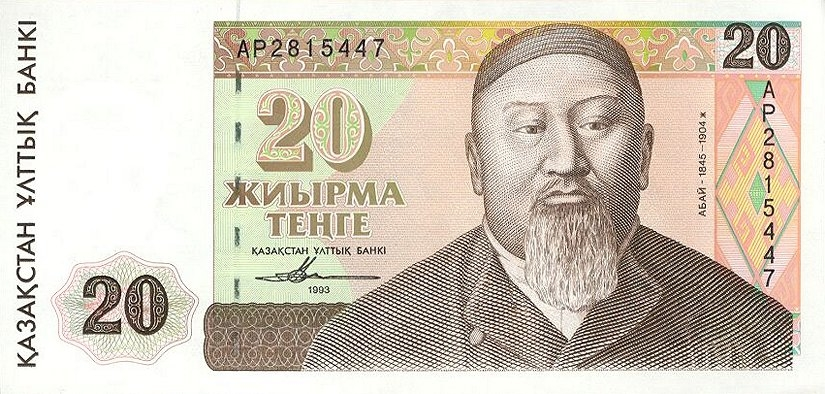
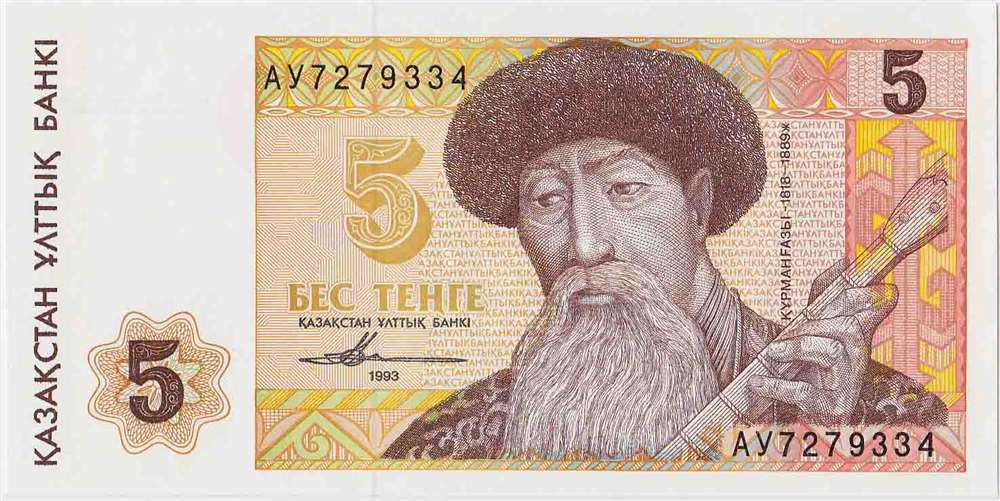

1993 Banknote Series
Past-oriented, culturally Kazakh, yet carefully non-divisive.




Notably absent: Kenesary, Imanov, Datov, Alash leaders.
Past-oriented, culturally Kazakh, yet carefully non-divisive.
Notably absent: Kenesary, Imanov, Datov, Alash leaders.